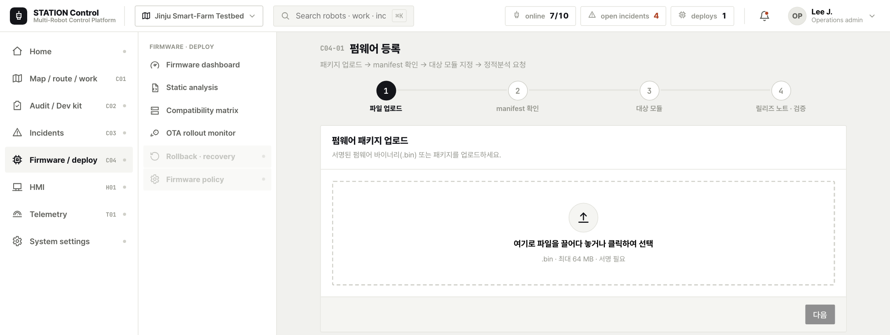
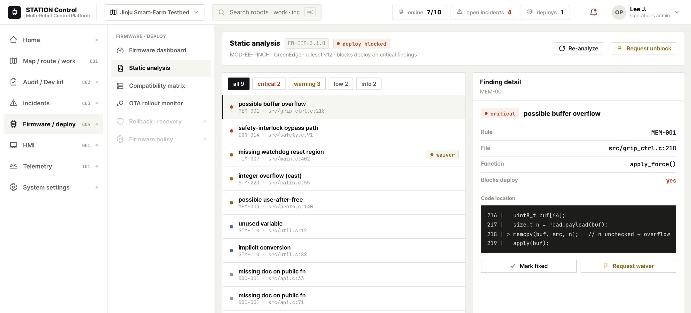
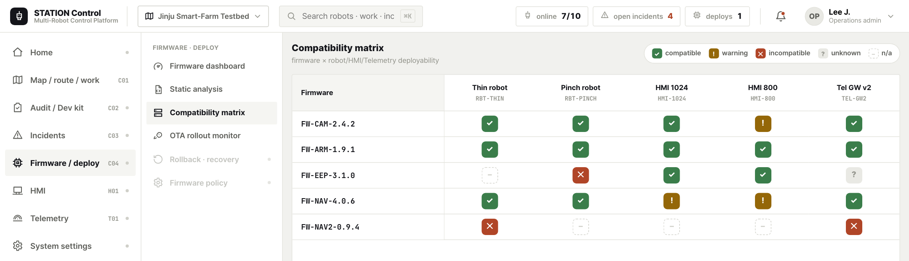
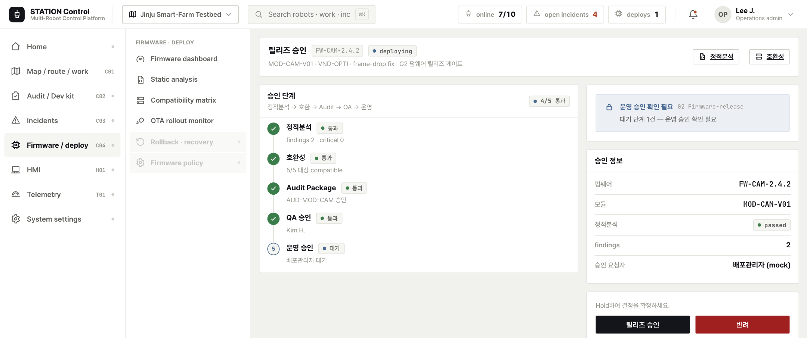
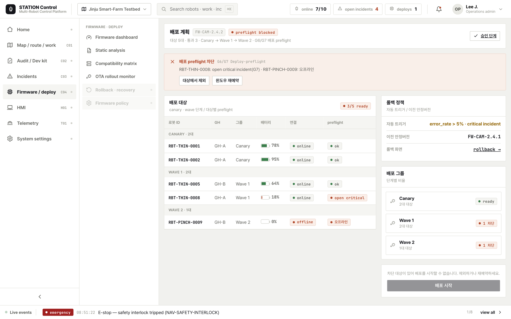
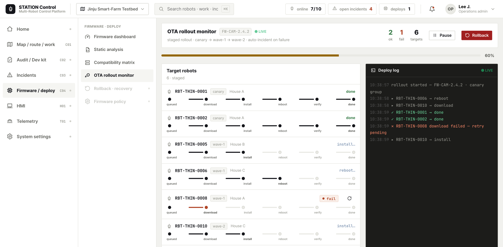
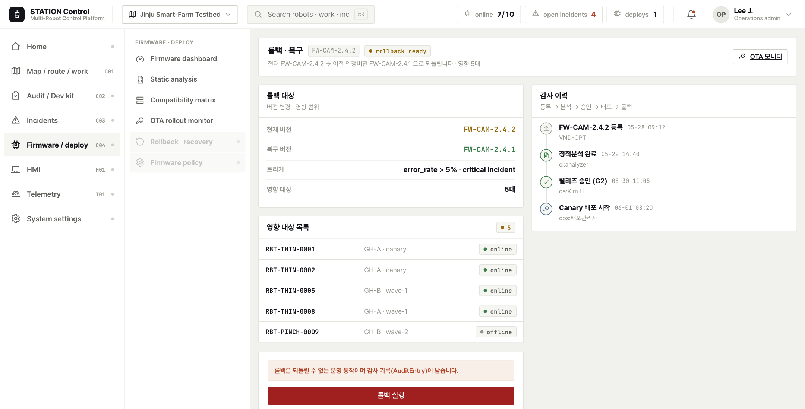

메타파머스·에이지로보틱스·대동로보틱스·KIRO·농업과학원 — 서로 다른 제조사 모듈의 펌웨어를 한 도구로 안전하게 검증·배포한다. 정적분석 → 호환성 매트릭스 → 릴리즈 승인(게이트) → OTA 배포 → 실패 시 롤백까지, 이기종 펌웨어가 잘못된 조합으로 현장에 나가지 않도록 단계마다 자동 게이트가 작동한다. 모든 펌웨어는 module_id 스파인에 묶인 Firmware Manifest 계약으로 등록된다.






